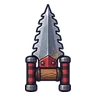

ผู้ตีระฆังกลวง
มอนธาตุมืด Lv 94–99
เจอที่
| แมพ | โซน | Lv | ภูมิภาค |
|---|---|---|---|
| หอระฆัง ชั้น 1 | 94–95 | เมืองหอระฆัง | |
| หอระฆัง ชั้น 1 | 95–96 | เมืองหอระฆัง | |
| หอระฆัง ชั้น 2 | 95–96 | เมืองหอระฆัง | |
| หอระฆัง ชั้น 2 | 96–97 | เมืองหอระฆัง | |
| หอระฆัง ชั้น 3 | 96–97 | เมืองหอระฆัง | |
| หอระฆัง ชั้น 3 | 97–98 | เมืองหอระฆัง | |
| หอระฆัง ชั้น 4 | 97–98 | เมืองหอระฆัง | |
| หอระฆัง ชั้น 4 | 98–99 | เมืองหอระฆัง | |
| หอระฆัง ชั้น 5 | 98–99 | เมืองหอระฆัง | |
| หอระฆัง ชั้น 5 | 99–99 | เมืองหอระฆัง | |
| หอระฆัง ชั้น 6 | 99–99 | เมืองหอระฆัง | |
| หอระฆัง ชั้น 7 · ยอดหอ | 99–99 | เมืองหอระฆัง | |
| หอรากมืด (Dark Root) | คณะประสานเสียงเงียบ | 62–71 |
ค่าสถานะตามเลเวล
| Lv | HP | ATK | DEF | MDEF | EXP | Job |
|---|---|---|---|---|---|---|
| 94 | 56,100 | 275–414 | 38 | 28 | 224 | 168 |
| 96 | 59,280 | 285–428 | 38 | 29 | 229 | 172 |
| 99 | 64,281 | 301–451 | 40 | 30 | 235 | 176 |
ตีด้วยธาตุไหนดี
แรงขึ้น: ศักดิ์สิทธิ์ ×1.25
เบาลง: วิญญาณ ×0.75 พิษ ×0.5 มืด ×0 อมตะ ×0
วัตถุดิบที่ดรอป
| ของ | โอกาส | |
|---|---|---|
| เชือกระฆังเก่า | 74% | 1 ชิ้น (15% ได้ 2) |
อุปกรณ์ที่ดรอป (10)
| ของ | โอกาส |
|---|---|
| 0.25% | |
| เกราะกวางเขางาม (เกราะอก) | 0.15% |
| เกราะกวางเขางาม (สนับขา + รองเท้าเกราะ) | 0.15% |
| 0.12% | |
 คาทาร์เลื่อยคนตัดไม้ | 0.12% |
| 0.12% | |
| 0.12% | |
| 0.06% | |
| 0.06% | |
| เกราะกวางเขางาม (เข็มกลัดเขากวาง) | 0.05% |
สกิล
ทุบพื้น (Lv 25+) · ทุบพื้น (Lv 60+) · ดึง (Lv 60+)